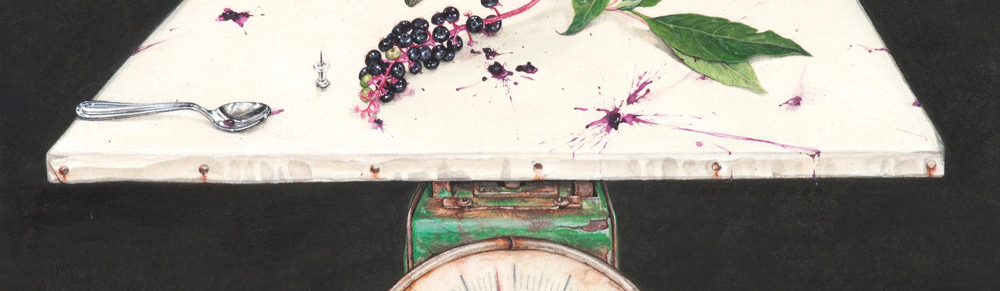

잠재된 기억을 소환하다
이진주

이진주
현재는 축적된 과거를 바탕으로 나아간다. 우리가 사는 시간은 현재에 속하지만, 현재의 우리를 만들어낸 건 수많은 과거의 경험과 기억이다. 우리는 과거를 배움으로써 현재 우리의 정체성을 파악하고, 경험에서 얻은 교훈으로 새로운 현재를 개척하고, 반복 강박에 빠져 같은 아픔을 반복하고, 트라우마에 얽매여 고통스러워한다. 이처럼 과거는 단순히 지나간 시간 속에만 박제되어 있지 않고, 현재에서도 살아있다. 작가 이진주의 작품은 과거를 소환해내는 일인 '기억'과 관련되어 있다. 끊임없는 관찰과 지독한 사유로 작가는 기억을 회화적으로 정의한다. 또한, 과거를 기억하는 일에 의미를 부여하여, 이미 지나가 생명력을 잃은 과거 사실을 현재의 시간 속에서 생동하게 한다.
A Way to Remember
때로는 투명한 벽면으로 둘러 싸인 밀실처럼, 때로는 세상으로부터 거칠게 떨어져나간 덩어리처럼 다른 세상과 동떨어져 고립된 공간은 작가의 의식과 무의식의 경계에 존재하는 초현실적 장소이다. 이곳에서 조각난 과거의 단편을 끄집어내고 풀어헤치고 관찰하는 작가는 기억의 주체이자 관찰자가 된다. 꿈을 통해 무의식 저편에 깊숙이 밀어 넣었던 기억과 욕망이 의식의 검열을 거쳐 왜곡되어 표상되듯, 현실과 유리된 그림 속 공간에서 우리는 옷을 입은 것도 벗은 것도 아닌 어정쩡한 상태의 인물과 어디서나 볼수 있지만 일상적 상황에서 벗어난 사물들과 만난다. 섬세하고 아름다우면서도 불편할 정도로 기이한 이진주의 그림은 한눈에 어떤 해석이나 판단할 수 없어 오랫동안 머무르며 바라보게 한다. 이는 중층적인 알레고리를 담은듯 복잡하고 혼란스런 심상의 풍경이란 이유도 있지만, 겹겹이 물감층을 쌓을 수 있는 유화와 달리 채색이 종이에 흡수되어 버리는 섬세한 한국화 기법으로 수개월 또는 수년에 걸쳐 완성되는 물리적 노고의 흔적을 고스란히 보여주기 때문이기도 하다. 작가는 이토록 섬세한 그림을 그리는 수고로운 행위를 통해 자신의 두렵고 불편한 기억과 감정을 마주하는 용기와 이를 통해 현실의 위협을 이겨내는 내성을 쌓아가는 것이 아닐까. 수수께끼처럼 펼쳐진 상황과 사물들을 읽으려 애쓰는 동안, 짐작할 길 없는 작가의 기억에 보는 이 자신의 기억이 겹쳐지고 이로써 무수히 많은 새로운 이야기가 탄생한다.